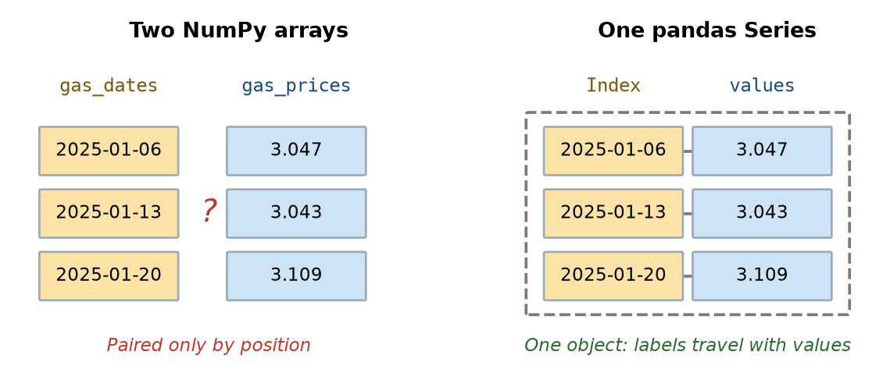
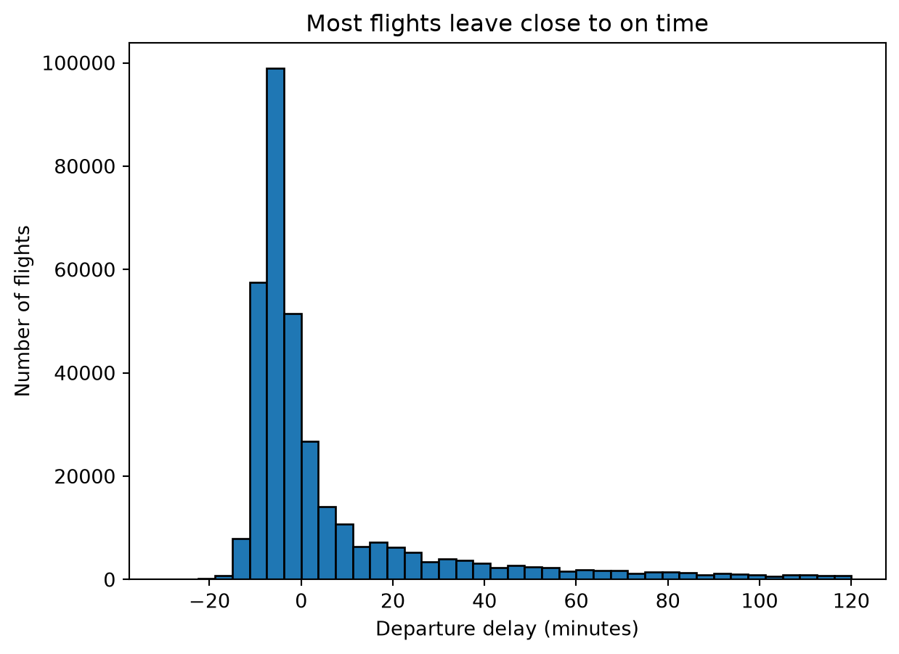
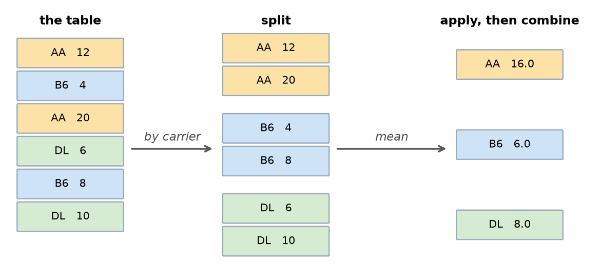
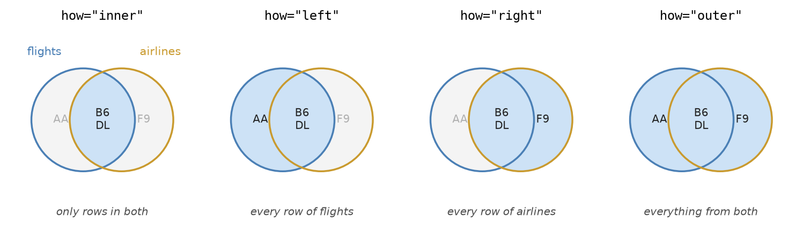
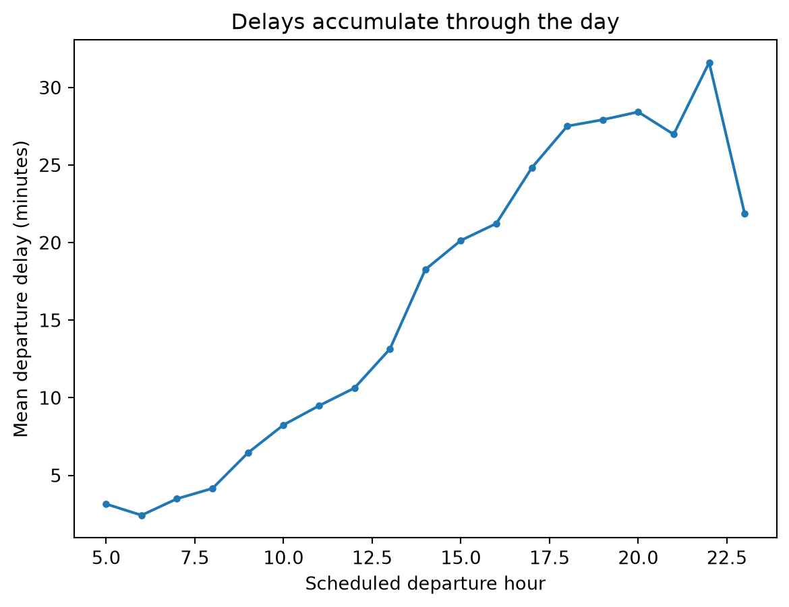

import pandas as pd5 Data tables
Suppose you are booking a flight out of New York and you would rather not spend the evening sitting on a runway. Which airline has the most frequent departure delays? Does it matter whether you fly out of Newark, JFK or LaGuardia, or whether you take a morning flight instead of an evening one? The U.S. government publishes data on every domestic flight, the airline that operated it, the airport it left from, the time it was scheduled to leave, and the time when it actually left. Using this data, it is possible to answer these questions.
When answering these questions it is important to keep information about the same flight together; i.e., you need each flight’s carrier, the time the flight was scheduled to depart, its delay, etc. attached to each other, for all flights. This is difficult to do using the the list and arrays discussed in the last two chapters.
A table makes the connection explicit. Each row corresponds to one item in the world, such as a single flight (or a movie or a particular week in the year), and each column is one measurement made on the item. This allows us to keep information about an item together when the table is sorted or a subset of the rows are selected. Columns can hold different types of information, such as text in one column and numbers in the next. In fact, data tables are one of the most frequently used formats when analyzing data, from spreadsheets to survey results to the tables inside databases.
In Python, the most popular package for representing and manipulating table data is pandas. The pandas package is built around two key data structures: a Series, which is a single sequence of values with labels attached, and a DataFrame which is a table of data. By the end you will be able to load a file into a table, select the rows and columns you want, add new columns computed from old ones, decide what to do about values that are missing, summarize a table one group at a time, and combine two tables into one. These operations will allow us to answer the questions about flight delays we posed above.
5.1 From arrays to Series
As mentioned above, the pandas package contains two key data structures: Series, and DataFrames. Let’s start by discussing the pandas Series and once we have understood this data structure we will go on to discuss DataFrames.
At the end of Chapter 4 we were storing data on a year of gas prices in two separate NumPy arrays: gas_prices held 52 prices as numbers and gas_dates held the 52 dates those numbers belonged to. The cell below loads them again, exactly as before.
# Try to download the data live from FRED; if that fails (for example, when there
# is no internet connection), fall back to a saved snapshot of the same year.
try:
from pandas_datareader.fred import FredReader
gas_data_all = FredReader("GASREGW", start="2024-06-01", end="2026-01-15").read().reset_index()
gas_year = gas_data_all[(gas_data_all["DATE"] >= "2025-01-01") & (gas_data_all["DATE"] < "2026-01-01")]
except Exception:
gas_year = pd.read_csv("data/gas_prices_GASREGW_2025.csv", parse_dates=["DATE"])
gas_prices = gas_year["GASREGW"].values
gas_dates = gas_year["DATE"].values
gas_prices[0:3]array([3.047, 3.043, 3.109])Because this data was held in separate arrays, nothing in Python knew they belonged together. The connection lived entirely in our own knowledge of the data, and we needed to be very careful to keep these arrays in the same order. Sort the prices to find the cheapest price and the dates no longer line up. Drop a week from one array and every position in the other becomes wrong. It was also difficult to ask the very simple question of given a particular week, what was the price of the gas during that week.
A Series solves this by carrying the labels (called an Index) along with the values. The values are just a regular ndarray that we saw in Chapter 4 and the Index allows us to easily access these array values through a set of labels.

We can create pandas Series by handing pandas the values and the Index labels we want attached to them:
# The values come first, then the labels to attach to them
gas = pd.Series(gas_prices, index=gas_dates)
gas.head()2025-01-06 3.047
2025-01-13 3.043
2025-01-20 3.109
2025-01-27 3.103
2025-02-03 3.082
dtype: float64When we call the .head() method, the left-hand column is the Index, which holds the labels, and the right-hand column holds the values. They are now one object, so anything that happens to the values happens to the labels too.
We can extract both the Index values and the data values separately if you want them. Using the .values property extracts the same NumPy array we started with, and using the .index property returns the Index values:
[gas.values[0:3], gas.index[0:3]][array([3.047, 3.043, 3.109]),
DatetimeIndex(['2025-01-06', '2025-01-13', '2025-01-20'], dtype='datetime64[us]', freq=None)]5.1.1 Looking up values by label and by position
We can extract values from a Series object by the position in the Series and by the Index label. To extract data by position, we use .iloc which takes a position, counting from zero the way a list or an array does, and returns the value at that position.
# The first price of the year, by position
gas.iloc[0]np.float64(3.047)To extract a value based on an Index label, we use .loc which takes a label, (which here means an actual date), and returns the value at that given label.
# The price in the week of April 7th, by label
gas.loc["2025-04-07"]np.float64(3.243)It is worth pausing here to make sure you understand the difference between .iloc and .loc is the single most common source of puzzlement for people new to pandas. The rule to understand them is short:
.ilocis about where a value sits; i.e., the position in the array.locis about what it is called; i.e., the Index name
On this Series above, the label "2025-04-07" and the position 13 refer to the same price, but only the former stays correct if the data is sorted or values are removed from the array.
5.1.2 All NumPy array operations works for Series
A Series is built on top of a NumPy array, so the vectorized arithmetic and Boolean masking from Chapter 4 carry over unchanged. Arithmetic applies to every value at once and the Index labels remain unchanged:
# Convert every price from dollars to cents
(gas * 100).head(3)2025-01-06 304.7
2025-01-13 304.3
2025-01-20 310.9
dtype: float64A comparison produces a Series of True and False values, and using it to index the Series keeps the rows where it is True:
expensive = gas[gas > 3.15]
expensive2025-03-31 3.162
2025-04-07 3.243
2025-04-14 3.168
2025-05-19 3.173
2025-05-26 3.160
2025-06-23 3.213
2025-06-30 3.164
2025-09-01 3.177
2025-09-08 3.192
2025-09-15 3.168
2025-09-22 3.173
dtype: float64The difference from a plain NumPy array is visible in that output. The result don’t just show us the expensive gas prices but they also show us which weeks were the expensive ones, because each value brought its Index date along with it.
That also means the summary functions can now answer questions in terms of labels. The .idxmax() method gives the Index label of the largest value rather than its position which can be much more informative:
# Which week of 2025 had the highest average price?
[gas.idxmax(), gas.max()][Timestamp('2025-04-07 00:00:00'), np.float64(3.243)]In Chapter 4 we could only say that prices peaked sometime in April. With a labeled index we can say that the peak was the week of April 7th, at just over $3.24, without counting positions by hand.
TipExercise
Using the gas Series:
- Find the price in the week of September 1st, 2025.
- Find the lowest price of the year and the week it occurred, using
.idxmin()and.min(). - Count how many weeks had a price below $3.00.
NoteSolution
# 1. A specific week, looked up by its label
gas.loc["2025-09-01"]np.float64(3.177)# 2. The cheapest week of the year
[gas.idxmin(), gas.min()][Timestamp('2025-12-29 00:00:00'), np.float64(2.811)]# 3. A comparison gives True/False, and summing counts the True values
(gas < 3.00).sum()np.int64(5)Prices bottomed out in the last week of December at about $2.81, and only 5 of the 52 weeks were below $3.00.
5.2 Tables of data: the DataFrame
A Series holds one column of data. Most data has many columns, and they are rarely all the same kind of data. The dataset we will use for the rest of this chapter records every flight that departed one of New York City’s three main airports during 2025 including the date, the airline, where the plane was going, how far it flew, and how late it left. Some of those are numbers, some are text, and a table needs to hold both.
The data comes from the Bureau of Transportation Statistics, the U.S. agency that collects on-time performance records from every domestic airline. Run the cell below to load it. As with the loading code in earlier chapters, you do not need to follow the details yet, though by the end of this chapter you will.
flights_all_columns = pd.read_csv(
"https://raw.githubusercontent.com/emeyers/intro_datascience/main/data/nycflights/flights.csv.gz"
)
flights_all_columns.head()| year | month | day | dep_time | sched_dep_time | dep_delay | arr_time | sched_arr_time | arr_delay | carrier | flight | tailnum | origin | dest | air_time | distance | hour | minute | time_hour | |
|---|---|---|---|---|---|---|---|---|---|---|---|---|---|---|---|---|---|---|---|
| 0 | 2025 | 1 | 1 | 453.0 | 500 | -7.0 | 810.0 | 820 | -10.0 | AA | 1196 | N338ST | EWR | MIA | 151.0 | 1085 | 5 | 0 | 2025-01-01 05:00:00 |
| 1 | 2025 | 1 | 1 | 500.0 | 501 | -1.0 | 755.0 | 804 | -9.0 | B6 | 713 | N2044J | JFK | FLL | 156.0 | 1069 | 5 | 1 | 2025-01-01 05:00:00 |
| 2 | 2025 | 1 | 1 | 459.0 | 501 | -2.0 | 810.0 | 801 | 9.0 | B6 | 1683 | N559JB | JFK | MCO | 148.0 | 944 | 5 | 1 | 2025-01-01 05:00:00 |
| 3 | 2025 | 1 | 1 | 507.0 | 510 | -3.0 | 806.0 | 812 | -6.0 | NK | 993 | N684NK | EWR | MCO | 144.0 | 937 | 5 | 10 | 2025-01-01 05:00:00 |
| 4 | 2025 | 1 | 1 | 523.0 | 525 | -2.0 | 832.0 | 845 | -13.0 | AA | 655 | N324RN | JFK | MIA | 156.0 | 1089 | 5 | 25 | 2025-01-01 05:00:00 |
Each row is one flight, and the columns contain information about each flight. For example, the dep_delay column records how many minutes late it left, and a negative value means it left early. Two rows in that first handful have blanks shown as NaN, which is how pandas displays a missing value; we will come back to what those mean shortly.
Like Series objects, DataFrames also have an Index that allows use to refer to rows by labels that are useful. Here the Index are just successive integer values so are not particularly useful. Later in the chapter we will explore setting the Index labels to more meaningful names to do useful operations on particular rows.
Before computing anything, it is worth finding out how larege the DataFrame is. The .shape property gives the number of rows and columns:
flights_all_columns.shape(360771, 19)As we can see from this output, there are 360,771 flights described by 19 columns. This is the first dataset in this book that would be genuinely painful to handle as lists.
The .columns property shows the column names, and .dtypes reports what kind of value each column holds:
flights_all_columns.dtypesyear int64
month int64
day int64
dep_time float64
sched_dep_time int64
dep_delay float64
arr_time float64
sched_arr_time int64
arr_delay float64
carrier str
flight int64
tailnum str
origin str
dest str
air_time float64
distance int64
hour int64
minute int64
time_hour str
dtype: objectNotice that dep_delay is a floating-point column even though a delay is always a whole number of minutes; that happens because some flights are missing a delay, and the missing marker NaN is itself a floating-point value. Also, text here is contained in the object data type.
The .describe() method summarizes numeric columns, giving the count, mean, standard deviation and quartiles you met in Chapter 3. Let’s look at these statistics for just the departure delay column:
# Just the delay column, rounded, so the numbers are readable
flights_all_columns["dep_delay"].describe().round(1)count 352137.0
mean 15.1
std 58.7
min -52.0
25% -7.0
50% -3.0
75% 10.0
max 2590.0
Name: dep_delay, dtype: float64The output shows that the mean departure delay is about 15 minutes, but the median (50% percentile) is −3 minutes, meaning a typical flight actually pushes back from the gate slightly early. The largest delay in the file is 2,590 minutes, which is a little over 43 hours. That gap between mean and median is the signature of a right-skewed distribution, exactly as in Chapter 3: most flights are close to on time, and a long tail of severe delays drags the average upward.
A histogram makes the shape visible. Because of that long tail, plotting the raw column would produce a single spike, so we restrict the range to the delays that most flights actually experience:
import matplotlib.pyplot as plt
plt.hist(flights_all_columns["dep_delay"], edgecolor = "k", bins=40, range=(-30, 120))
plt.xlabel("Departure delay (minutes)")
plt.ylabel("Number of flights")
plt.title("Most flights leave close to on time")
plt.show()
The peak sits just below zero, and the tail stretches to the right. Keep this picture in mind, because the rest of the chapter is largely about asking which flights sit in that tail.
TipExercise
Using the flights_all_columns table:
- How many columns does it have? Get the answer from
.shaperather than counting. - Display the last five rows using
.tail(). - Use
.describe()on thedistancecolumn. What are the shortest and longest flights in the data?
NoteSolution
# 1. .shape gives (rows, columns), so the second value is the column count
flights_all_columns.shape[1]19# 2. The last five rows
flights_all_columns.tail()| year | month | day | dep_time | sched_dep_time | dep_delay | arr_time | sched_arr_time | arr_delay | carrier | flight | tailnum | origin | dest | air_time | distance | hour | minute | time_hour | |
|---|---|---|---|---|---|---|---|---|---|---|---|---|---|---|---|---|---|---|---|
| 360766 | 2025 | 12 | 31 | 1619.0 | 2230 | 1069.0 | 1909.0 | 106 | 1083.0 | F9 | 1157 | N613FR | EWR | ATL | 109.0 | 746 | 22 | 30 | 2025-12-31 22:00:00 |
| 360767 | 2025 | 12 | 31 | 2233.0 | 2235 | -2.0 | 2335.0 | 2359 | -24.0 | B6 | 2516 | N618JB | JFK | SYR | 44.0 | 209 | 22 | 35 | 2025-12-31 22:00:00 |
| 360768 | 2025 | 12 | 31 | 2246.0 | 2255 | -9.0 | 119.0 | 123 | -4.0 | F9 | 3161 | N342FR | LGA | DEN | 234.0 | 1620 | 22 | 55 | 2025-12-31 22:00:00 |
| 360769 | 2025 | 12 | 31 | 2305.0 | 2259 | 6.0 | 28.0 | 16 | 12.0 | B6 | 1118 | N3261J | JFK | BOS | 43.0 | 187 | 22 | 59 | 2025-12-31 22:00:00 |
| 360770 | 2025 | 12 | 31 | 2324.0 | 2259 | 25.0 | 16.0 | 2359 | 17.0 | B6 | 675 | N3260J | JFK | BDL | 30.0 | 106 | 22 | 59 | 2025-12-31 22:00:00 |
# 3. Summary of the distance column
flights_all_columns["distance"].describe().round(1)count 360771.0
mean 1070.0
std 708.9
min 96.0
25% 544.0
50% 944.0
75% 1391.0
max 4983.0
Name: distance, dtype: float64The shortest flight in the data covers 96 miles and the longest 4,983 miles, with half of all flights falling between 544 and 1,391 miles.
5.3 Selecting columns and rows
A table is only useful if you can analyze the parts of it that you are interested in. Pandas separates this into two questions: which columns, and which rows.
5.3.1 Columns
Passing a single column name in square brackets gives that column back as a Series, the object from the start of this chapter:
flights_all_columns["dep_delay"].head()0 -7.0
1 -1.0
2 -2.0
3 -3.0
4 -2.0
Name: dep_delay, dtype: float64Passing a list of names instead gives back a DataFrame containing those columns:
flights_all_columns[["carrier", "origin", "dest", "dep_delay"]].head()| carrier | origin | dest | dep_delay | |
|---|---|---|---|---|
| 0 | AA | EWR | MIA | -7.0 |
| 1 | B6 | JFK | FLL | -1.0 |
| 2 | B6 | JFK | MCO | -2.0 |
| 3 | NK | EWR | MCO | -3.0 |
| 4 | AA | JFK | MIA | -2.0 |
The difference between those two is a common stumbling block when learning first pandas, because the second form looks like the first with an extra pair of brackets. It helps to read the inner brackets as an ordinary Python list: flights_all_columns[["carrier", "dest"]] is asking for a list of columns, so the answer is a DataFrame. The flights_all_columns["carrier"] is just a single string inside the square brackets, so the answer is a Series. Note, a DataFrame is also returned if a list with a single string is also used, so flights_all_columns[["dest"]] returns a DataFrame with one column, while flights_all_columns["dest"] returns a Series.
Selecting columns is also how we make a table easier to live with. Nineteen columns is more than fits comfortably on a page, and this chapter only needs about half of them, so let us keep those in a table called flights and use it from here on:
flights = flights_all_columns[["month", "day", "carrier", "flight", "tailnum",
"origin", "dest", "dep_delay", "arr_delay",
"air_time", "distance", "hour"]].copy()
flights.head()| month | day | carrier | flight | tailnum | origin | dest | dep_delay | arr_delay | air_time | distance | hour | |
|---|---|---|---|---|---|---|---|---|---|---|---|---|
| 0 | 1 | 1 | AA | 1196 | N338ST | EWR | MIA | -7.0 | -10.0 | 151.0 | 1085 | 5 |
| 1 | 1 | 1 | B6 | 713 | N2044J | JFK | FLL | -1.0 | -9.0 | 156.0 | 1069 | 5 |
| 2 | 1 | 1 | B6 | 1683 | N559JB | JFK | MCO | -2.0 | 9.0 | 148.0 | 944 | 5 |
| 3 | 1 | 1 | NK | 993 | N684NK | EWR | MCO | -3.0 | -6.0 | 144.0 | 937 | 5 |
| 4 | 1 | 1 | AA | 655 | N324RN | JFK | MIA | -2.0 | -13.0 | 156.0 | 1089 | 5 |
The .copy() on the end is the same method used on an array in Chapter 4, and it is there for the same reason: it makes flights an independent table rather than a view onto the original, so that adding a column to it later cannot disturb flights_all_columns.
Every one of the 360,771 flights is still here, since selecting columns does not remove any rows. What has changed is how much of each flight we are carrying: twelve columns instead of nineteen, which is narrow enough to display whole. The original table is still available as flights_all_columns whenever one of the columns we dropped is needed.
5.3.2 Rows
We can extract a subset of rows in the same way they as we did for a Series. In particular, the .iloc selects rows by position:
# The first three rows
flights.iloc[0:3]| month | day | carrier | flight | tailnum | origin | dest | dep_delay | arr_delay | air_time | distance | hour | |
|---|---|---|---|---|---|---|---|---|---|---|---|---|
| 0 | 1 | 1 | AA | 1196 | N338ST | EWR | MIA | -7.0 | -10.0 | 151.0 | 1085 | 5 |
| 1 | 1 | 1 | B6 | 713 | N2044J | JFK | FLL | -1.0 | -9.0 | 156.0 | 1069 | 5 |
| 2 | 1 | 1 | B6 | 1683 | N559JB | JFK | MCO | -2.0 | 9.0 | 148.0 | 944 | 5 |
We can also select columns based on the Index name using the .loc method, in the same way as we did for Series. As mentioned above, the Index names in flights DataFrame Iare just successive integers which is not particularly useful. Let’s use set the Index to the destination of where the flight is going using the the .set_index() method.
flights2 = flights.set_index("dest")
flights2.head()| month | day | carrier | flight | tailnum | origin | dep_delay | arr_delay | air_time | distance | hour | |
|---|---|---|---|---|---|---|---|---|---|---|---|
| dest | |||||||||||
| MIA | 1 | 1 | AA | 1196 | N338ST | EWR | -7.0 | -10.0 | 151.0 | 1085 | 5 |
| FLL | 1 | 1 | B6 | 713 | N2044J | JFK | -1.0 | -9.0 | 156.0 | 1069 | 5 |
| MCO | 1 | 1 | B6 | 1683 | N559JB | JFK | -2.0 | 9.0 | 148.0 | 944 | 5 |
| MCO | 1 | 1 | NK | 993 | N684NK | EWR | -3.0 | -6.0 | 144.0 | 937 | 5 |
| MIA | 1 | 1 | AA | 655 | N324RN | JFK | -2.0 | -13.0 | 156.0 | 1089 | 5 |
We can then use the the .loc method to extract only flights that are going to Miami using:
flights2 = flights2.loc["MIA"]
flights2.head()| month | day | carrier | flight | tailnum | origin | dep_delay | arr_delay | air_time | distance | hour | |
|---|---|---|---|---|---|---|---|---|---|---|---|
| dest | |||||||||||
| MIA | 1 | 1 | AA | 1196 | N338ST | EWR | -7.0 | -10.0 | 151.0 | 1085 | 5 |
| MIA | 1 | 1 | AA | 655 | N324RN | JFK | -2.0 | -13.0 | 156.0 | 1089 | 5 |
| MIA | 1 | 1 | AA | 1249 | N976NN | LGA | 5.0 | -2.0 | 161.0 | 1096 | 5 |
| MIA | 1 | 1 | AA | 1235 | N334SM | JFK | -5.0 | -28.0 | 154.0 | 1089 | 6 |
| MIA | 1 | 1 | AA | 1530 | N987AN | LGA | -3.0 | -6.0 | 156.0 | 1096 | 7 |
We can also return the Index names as as return column using the reset_index() method. In this case, it will make dest a regular a column again and will once again set the Index to successive integers.
flights2 = flights2.reset_index()
flights2.head()| dest | month | day | carrier | flight | tailnum | origin | dep_delay | arr_delay | air_time | distance | hour | |
|---|---|---|---|---|---|---|---|---|---|---|---|---|
| 0 | MIA | 1 | 1 | AA | 1196 | N338ST | EWR | -7.0 | -10.0 | 151.0 | 1085 | 5 |
| 1 | MIA | 1 | 1 | AA | 655 | N324RN | JFK | -2.0 | -13.0 | 156.0 | 1089 | 5 |
| 2 | MIA | 1 | 1 | AA | 1249 | N976NN | LGA | 5.0 | -2.0 | 161.0 | 1096 | 5 |
| 3 | MIA | 1 | 1 | AA | 1235 | N334SM | JFK | -5.0 | -28.0 | 154.0 | 1089 | 6 |
| 4 | MIA | 1 | 1 | AA | 1530 | N987AN | LGA | -3.0 | -6.0 | 156.0 | 1096 | 7 |
Usually, however, the most useful way to extract rows is not by position or by using Index names, but instead “filtering” rows that match particular conditions based on values in particular coloumns. In Chapter 4 a comparison on a NumPy array produced an array of True and False values that could be used to keep only the values you wanted. The same idea works on a DataFrame, which is a powerful way to get only rows we are interested in. For example, we can get only the flights that left JFK airport using the code below:
# True for every flight that left from JFK
from_jfk = flights["origin"] == "JFK"
# Extracting just the flights from JFK
flights[from_jfk].head()| month | day | carrier | flight | tailnum | origin | dest | dep_delay | arr_delay | air_time | distance | hour | |
|---|---|---|---|---|---|---|---|---|---|---|---|---|
| 1 | 1 | 1 | B6 | 713 | N2044J | JFK | FLL | -1.0 | -9.0 | 156.0 | 1069 | 5 |
| 2 | 1 | 1 | B6 | 1683 | N559JB | JFK | MCO | -2.0 | 9.0 | 148.0 | 944 | 5 |
| 4 | 1 | 1 | AA | 655 | N324RN | JFK | MIA | -2.0 | -13.0 | 156.0 | 1089 | 5 |
| 9 | 1 | 1 | B6 | 523 | N4022J | JFK | LAX | -4.0 | -25.0 | 340.0 | 2475 | 5 |
| 12 | 1 | 1 | AA | 76 | N101NN | JFK | SFO | -3.0 | -15.0 | 366.0 | 2586 | 6 |
# How many of the year's flights left from JFK?
from_jfk.sum()np.int64(104760)Conditions can be combined with & for “and” and | for “or”. Each condition needs its own parentheses:
# Flights from JFK that left more than an hour late
badly_delayed = flights[(flights["origin"] == "JFK") & (flights["dep_delay"] > 60)]
badly_delayed.shape[0]8889Nearly nine thousand flights out of JFK left over an hour behind schedule during the year.
TipExercise
- Select just the
carrier,flightanddestcolumns, and show the first three rows. - How many flights departed from Newark (
EWR)? - How many flights left from LaGuardia (
LGA) and flew more than 1,000 miles?
NoteSolution
# 1. A list of column names gives back a table
flights[["carrier", "flight", "dest"]].head(3)| carrier | flight | dest | |
|---|---|---|---|
| 0 | AA | 1196 | MIA |
| 1 | B6 | 713 | FLL |
| 2 | B6 | 1683 | MCO |
# 2. A comparison gives True/False, and summing counts the True values
(flights["origin"] == "EWR").sum()np.int64(120286)# 3. Two conditions, each in its own parentheses
long_from_lga = flights[(flights["origin"] == "LGA") & (flights["distance"] > 1000)]
long_from_lga.shape[0]45087Newark handled 120,286 departures, and 45,087 flights left LaGuardia for a destination more than 1,000 miles away.
5.4 The .query() method: A more readible way to filter data
Boolean masking is very common way to get a subset of rows that meet particular conditions, and you will see it everywhere. However the syntax can be a little cumbersome. For example, the name of the table appears three times in a single line in the code below:
flights[(flights["origin"] == "JFK") & (flights["dep_delay"] > 60)].shape[0]8889Pandas also has a .query() method, which takes the condition as a string and lets you refer to columns by their names:
flights.query('origin == "JFK" and dep_delay > 60').shape[0]8889The two give exactly the same 8,889 rows. Inside a query you write and, or and not rather than &, | and ~, which is closer to how you would say the condition out loud. Because the whole condition is a string, the quotes have to alternate: the example above wraps the query in single quotes so that the string "JFK" inside it can use double ones.
To use a value held in a Python variable, put @ in front of its name:
cutoff = 180
flights.query("dep_delay > @cutoff").shape[0]7442There is one limitation worth knowing. Because .query() refers to columns as though they were variable names, it only works when a column name is a legal Python variable name. A column called budget_2013$, like the one in the movie data from Chapter 3, cannot be referred to this way since it ends in a dollar sign, so in this case you would need to use Boolean indexing to extract data from this row. Likewise, we can’t use the .query() method to refer to columns that have spaces in their names.
Neither style is more correct. Using whichever makes a particular code easier to read is generally perferred.
TipExercise
Rewrite each of these using .query(), and check that you get the same number of rows:
flights[flights["dest"] == "LAX"]flights[(flights["origin"] == "EWR") & (flights["distance"] < 500)]
NoteSolution
# 1. A single condition on a text column
[flights[flights["dest"] == "LAX"].shape[0],
flights.query('dest == "LAX"').shape[0]][15496, 15496]# 2. Two conditions joined with "and" rather than "&"
[flights[(flights["origin"] == "EWR") & (flights["distance"] < 500)].shape[0],
flights.query('origin == "EWR" and distance < 500').shape[0]][21367, 21367]Both pairs agree: 15,496 flights went to Los Angeles, and 21,367 short flights left Newark.
5.5 Adding, renaming, and sorting columns
A new column can be added to a DataFrame by assigning an array, Series that is the same length as the DataFrame, to a name that does not exist yet.
# How much time a flight made up in the air: positive means it caught up
flights["time_made_up"] = flights["dep_delay"] - flights["arr_delay"]
flights[["carrier", "origin", "dest", "dep_delay", "arr_delay", "time_made_up"]].head()| carrier | origin | dest | dep_delay | arr_delay | time_made_up | |
|---|---|---|---|---|---|---|
| 0 | AA | EWR | MIA | -7.0 | -10.0 | 3.0 |
| 1 | B6 | JFK | FLL | -1.0 | -9.0 | 8.0 |
| 2 | B6 | JFK | MCO | -2.0 | 9.0 | -11.0 |
| 3 | NK | EWR | MCO | -3.0 | -6.0 | 3.0 |
| 4 | AA | JFK | MIA | -2.0 | -13.0 | 11.0 |
Columns are renamed by passing a dictionary, the data structure from Chapter 2, whose keys are the old names and whose values are the new ones:
flights = flights.rename(columns={"dep_delay": "departure_delay"})
flights.columnsIndex(['month', 'day', 'carrier', 'flight', 'tailnum', 'origin', 'dest',
'departure_delay', 'arr_delay', 'air_time', 'distance', 'hour',
'time_made_up'],
dtype='str')That change makes the rest of this chapter harder to read rather than easier, so we will put it straight back:
flights = flights.rename(columns={"departure_delay": "dep_delay"})We can use .sort_values() method to reorder the rows by values in a column. By default the values are sorted from smallest to largest. Adding ascending=False argument puts the largest first. We can get the flights with the longest delays using:
# The five longest departure delays of the year
flights.sort_values("dep_delay", ascending=False).head(5)| month | day | carrier | flight | tailnum | origin | dest | dep_delay | arr_delay | air_time | distance | hour | time_made_up | |
|---|---|---|---|---|---|---|---|---|---|---|---|---|---|
| 145859 | 5 | 31 | AA | 2051 | N679AW | LGA | CLT | 2590.0 | 2586.0 | 80.0 | 544 | 14 | 4.0 |
| 253103 | 9 | 16 | AA | 3211 | N849NN | LGA | MIA | 2092.0 | 2131.0 | 168.0 | 1096 | 9 | -39.0 |
| 269010 | 10 | 2 | AA | 1303 | N934AN | EWR | DFW | 2084.0 | 2087.0 | 170.0 | 1372 | 8 | -3.0 |
| 343662 | 12 | 14 | AA | 2646 | N331TK | JFK | PHX | 2050.0 | 2021.0 | 285.0 | 2153 | 9 | 29.0 |
| 122430 | 5 | 6 | AA | 2933 | N955AN | EWR | MIA | 1725.0 | 1772.0 | 160.0 | 1085 | 17 | -47.0 |
TipExercise
- Sort the flights by
distanceand show the three longest. - Add a column called
speedholding each flight’s average speed in miles per hour, which isdistancedivided byair_time, multiplied by 60 becauseair_timeis in minutes. - Use
.idxmax()to find the single fastest flight in the data.
NoteSolution
# 1. Sort descending and take the top three
flights.sort_values("distance", ascending=False).head(3)[
["carrier", "origin", "dest", "distance"]
]| carrier | origin | dest | distance | |
|---|---|---|---|---|
| 23784 | HA | JFK | HNL | 4983 |
| 50822 | HA | JFK | HNL | 4983 |
| 355549 | DL | JFK | HNL | 4983 |
# 2. air_time is in minutes, so multiply by 60 to get miles per hour
flights["speed"] = (flights["distance"] / flights["air_time"]) * 60
flights[["origin", "dest", "distance", "air_time", "speed"]].head(3)| origin | dest | distance | air_time | speed | |
|---|---|---|---|---|---|
| 0 | EWR | MIA | 1085 | 151.0 | 431.125828 |
| 1 | JFK | FLL | 1069 | 156.0 | 411.153846 |
| 2 | JFK | MCO | 944 | 148.0 | 382.702703 |
# 3. The row with the largest value in the new column
fastest = flights.loc[flights["speed"].idxmax()]
fastest[["carrier", "flight", "origin", "dest", "distance", "air_time", "speed"]]carrier NK
flight 2422
origin LGA
dest CLT
distance 544
air_time 39.0
speed 836.923077
Name: 135181, dtype: objectThe longest flights run from JFK to Honolulu, a distance of 4,983 miles. The fastest works out at about 837 miles per hour, which ought to give you pause. No airliner cruises that fast, only four flights in the entire year come out above 700, and the median is around 405. The likely explanation is that this flight’s recorded air time is wrong, not that the aircraft broke a record. A result that disagrees with what you already know about the world is usually telling you something about the data rather than about the world.
5.6 Missing data
Those NaN values in the very first rows we looked at were not a mistake in the file. A cancelled flight still appears in the data, because it was scheduled and then did not happen: it has a scheduled departure time but no actual one, and so no delay.
.isna() marks every missing value with True, and since summing a Boolean column counts the True values, the two together count what is missing:
flights[["dep_delay", "arr_delay", "tailnum"]].isna().sum()dep_delay 8634
arr_delay 10284
tailnum 1333
dtype: int64So 8,634 of the year’s 360,771 flights never left, about 2.4% of the schedule. That is information rather than an error, and it is worth noticing that the number of missing arrival delays is larger still: a flight can take off and then be diverted, so it departs but never arrives where it meant to.
Most calculations skip missing values automatically. The mean delay we computed earlier was the mean of the flights that actually departed, and pandas did that silently. When you want to work only with complete rows, .dropna() removes the rest. Passing subset= restricts the check to the columns you care about, which matters here because dropping every row with any missing value would also discard the flights whose tailnum was never recorded:
departed = flights.dropna(subset=["dep_delay"])
[flights.shape[0], departed.shape[0]][360771, 352137]Deciding what to do about missing values is a judgment call rather than a technical one. Dropping the cancelled flights is the right choice when you are asking how late departures run, and the wrong choice when you are asking how reliable an airline is, since cancelling a flight is the most severe way of failing a passenger. The data cannot make that decision for you.
TipExercise
- How many flights are missing an
air_time? - Cancelled flights have no
dep_delay. Use a Boolean mask with.isna()to select them, and find how many were scheduled to leave JFK.
NoteSolution
# 1. Count the missing values in one column
flights["air_time"].isna().sum()np.int64(10284)# 2. .isna() gives a True/False column, which selects rows like any other mask
cancelled = flights[flights["dep_delay"].isna()]
(cancelled["origin"] == "JFK").sum()np.int64(1915)10,284 flights have no recorded air time, and 1,915 of the cancelled flights were due to leave JFK.
5.7 Summarizing by group
Here is a question the table can answer but no single number can: which airline should you avoid? Answering it means splitting the flights into groups by airline, computing the mean delay within each group, and collecting the results into a new table. That three-step pattern is common enough to have a name, split-apply-combine, and .groupby() performs it.

In code, that is one call. .groupby("carrier") forms the groups, and .agg() says what to compute for each one. The form used here names each output column and says which input column and which statistic it comes from:
by_carrier = flights.groupby("carrier").agg(
flights=("flight", "count"),
mean_delay=("dep_delay", "mean"),
)
by_carrier.round(1)| flights | mean_delay | |
|---|---|---|
| carrier | ||
| AA | 37242 | 17.4 |
| AS | 6929 | 17.0 |
| B6 | 45897 | 17.6 |
| DL | 66308 | 16.3 |
| F9 | 6873 | 27.1 |
| G4 | 668 | 12.4 |
| HA | 367 | 18.3 |
| MQ | 902 | 21.0 |
| NK | 15107 | 16.8 |
| OO | 2704 | 15.6 |
| UA | 75948 | 15.4 |
| WN | 11714 | 20.6 |
| YX | 90112 | 9.7 |
The carrier codes have become the index of the result, which is why they sit to the left in bold. Sorting turns this into an answer:
by_carrier.sort_values("mean_delay", ascending=False).round(1)| flights | mean_delay | |
|---|---|---|
| carrier | ||
| F9 | 6873 | 27.1 |
| MQ | 902 | 21.0 |
| WN | 11714 | 20.6 |
| HA | 367 | 18.3 |
| B6 | 45897 | 17.6 |
| AA | 37242 | 17.4 |
| AS | 6929 | 17.0 |
| NK | 15107 | 16.8 |
| DL | 66308 | 16.3 |
| OO | 2704 | 15.6 |
| UA | 75948 | 15.4 |
| G4 | 668 | 12.4 |
| YX | 90112 | 9.7 |
Frontier is the worst, at about 27 minutes of average delay, and Republic the best at under 10. Before repeating that anywhere, look at the flights column beside it. Frontier’s figure rests on 6,873 flights, which is plenty, but Envoy Air sits second-worst on the strength of only 902, and Hawaiian’s 367 flights are too few to say much at all. An average computed from a handful of observations bounces around, and a table sorted by that average will tend to put small groups at both ends. Reporting the group size alongside the statistic is the habit that keeps this visible.
TipExercise
- Group the flights by
originand compute the mean departure delay for each of the three airports. - Group by
monthand compute both the mean delay and the number of flights. Which month is worst, and does the answer make sense?
NoteSolution
# 1. One row per airport
flights.groupby("origin").agg(mean_delay=("dep_delay", "mean")).round(1)| mean_delay | |
|---|---|
| origin | |
| EWR | 15.9 |
| JFK | 14.2 |
| LGA | 15.2 |
# 2. Two statistics per month
by_month = flights.groupby("month").agg(
flights=("flight", "count"),
mean_delay=("dep_delay", "mean"),
)
by_month.round(1)| flights | mean_delay | |
|---|---|---|
| month | ||
| 1 | 29376 | 8.3 |
| 2 | 27307 | 11.0 |
| 3 | 30606 | 10.4 |
| 4 | 29474 | 9.5 |
| 5 | 29434 | 18.8 |
| 6 | 29153 | 22.3 |
| 7 | 31436 | 28.5 |
| 8 | 31102 | 14.5 |
| 9 | 29900 | 8.6 |
| 10 | 31508 | 13.0 |
| 11 | 30606 | 15.0 |
| 12 | 30869 | 21.9 |
The three airports are close together, between about 14 and 16 minutes. The month-by-month pattern is much stronger: July is worst at 28.5 minutes and January best at 8.3. Summer combines the heaviest travel demand with thunderstorm season, and a plane held up by an afternoon storm is late for every leg it flies afterwards.
5.8 Joining two tables
The result above is still hard to read, because F9 and YX are codes rather than names. The codes are explained in a second file, which lists every airline that appears in the data:
airlines = pd.read_csv(
"https://raw.githubusercontent.com/emeyers/intro_datascience/main/data/nycflights/airlines.csv"
)
airlines| carrier | name | |
|---|---|---|
| 0 | AA | American Airlines Inc. |
| 1 | AS | Alaska Airlines Inc. |
| 2 | B6 | JetBlue Airways |
| 3 | DL | Delta Air Lines Inc. |
| 4 | F9 | Frontier Airlines Inc. |
| 5 | G4 | Allegiant Air |
| 6 | HA | Hawaiian Airlines Inc. |
| 7 | MQ | Envoy Air |
| 8 | NK | Spirit Air Lines |
| 9 | OO | SkyWest Airlines Inc. |
| 10 | UA | United Air Lines Inc. |
| 11 | WN | Southwest Airlines Co. |
| 12 | YX | Republic Airline |
This is the situation a join exists for: two tables that share a column, holding different information about the same things. .merge() combines them, matching rows wherever the shared column agrees:
named = flights.merge(airlines, on="carrier")
named[["carrier", "name", "origin", "dest", "dep_delay"]].head()| carrier | name | origin | dest | dep_delay | |
|---|---|---|---|---|---|
| 0 | AA | American Airlines Inc. | EWR | MIA | -7.0 |
| 1 | B6 | JetBlue Airways | JFK | FLL | -1.0 |
| 2 | B6 | JetBlue Airways | JFK | MCO | -2.0 |
| 3 | NK | Spirit Air Lines | EWR | MCO | -3.0 |
| 4 | AA | American Airlines Inc. | JFK | MIA | -2.0 |
Every flight has kept its own data and gained the name column from the airlines table. The on= argument names the column to match on; when the two tables call it different things, left_on= and right_on= let you say so.
The remaining question is what happens to rows that find no match. That is what how= controls, and the four choices are easiest to see drawn:

The default is how="inner", which keeps only the rows that matched on both sides. Here every carrier in the flights table has an entry in the airlines table, so nothing is lost and the row count is unchanged:
[flights.shape[0], named.shape[0]][360771, 360771]That check is worth performing every time you merge. A join that silently drops rows, because a key was spelled differently or a lookup table was incomplete, is one of the easier ways to get a wrong answer that looks entirely reasonable. If you want to be sure nothing is discarded, how="left" keeps every row of the left-hand table whether or not it found a match, filling the new columns with NaN where it did not.
We can now put the whole chapter together. Load a table, join it to a second one, group the result, summarize each group, and sort:
delay_by_airline = (
flights
.merge(airlines, on="carrier")
.groupby("name")
.agg(flights=("flight", "count"), mean_delay=("dep_delay", "mean"))
.sort_values("mean_delay", ascending=False)
)
delay_by_airline.round(1)| flights | mean_delay | |
|---|---|---|
| name | ||
| Frontier Airlines Inc. | 6873 | 27.1 |
| Envoy Air | 902 | 21.0 |
| Southwest Airlines Co. | 11714 | 20.6 |
| Hawaiian Airlines Inc. | 367 | 18.3 |
| JetBlue Airways | 45897 | 17.6 |
| American Airlines Inc. | 37242 | 17.4 |
| Alaska Airlines Inc. | 6929 | 17.0 |
| Spirit Air Lines | 15107 | 16.8 |
| Delta Air Lines Inc. | 66308 | 16.3 |
| SkyWest Airlines Inc. | 2704 | 15.6 |
| United Air Lines Inc. | 75948 | 15.4 |
| Allegiant Air | 668 | 12.4 |
| Republic Airline | 90112 | 9.7 |
That is a readable answer to the question we started with, built from five operations that each did one thing.
TipExercise
- Merge
flightswithairlines, then find the mean delay for JetBlue flights only. - Repeat the airline summary, but group by both
nameandoriginby passing a list to.groupby(). Which airline and airport combination has the worst average delay among pairings with at least 5,000 flights?
NoteSolution
# 1. Merge first, then filter to one airline
jetblue = named[named["name"] == "JetBlue Airways"]
jetblue["dep_delay"].mean().round(1)np.float64(17.6)# 2. A list of columns groups by every combination of them
pairs = named.groupby(["name", "origin"]).agg(
flights=("flight", "count"),
mean_delay=("dep_delay", "mean"),
)
# Keep only the pairings with enough flights to be meaningful, then sort
big_pairs = pairs[pairs["flights"] >= 5000]
big_pairs.sort_values("mean_delay", ascending=False).round(1).head(5)| flights | mean_delay | ||
|---|---|---|---|
| name | origin | ||
| Delta Air Lines Inc. | EWR | 6581 | 25.8 |
| Southwest Airlines Co. | LGA | 11714 | 20.6 |
| American Airlines Inc. | LGA | 16821 | 20.4 |
| Spirit Air Lines | EWR | 9067 | 20.2 |
| JetBlue Airways | EWR | 5309 | 19.0 |
JetBlue averages 17.6 minutes. Among pairings with at least 5,000 flights, Delta out of Newark is worst at 25.8 minutes, well above Delta’s overall figure of 16.3, which suggests the problem lies with that particular operation rather than with the airline as a whole. Note how grouping by two columns produces a row for each combination that actually occurs, rather than for every pairing imaginable.
5.9 Summary
- A Series is a one-dimensional column of values with an index of labels attached. The labels travel with the values, so filtering or sorting cannot break the correspondence between them.
.locselects by label and.ilocselects by position. Keeping the two apart avoids most early confusion with pandas.- A DataFrame is a table whose columns are Series sharing one index.
pd.read_csvreturns one. - Look at data before computing on it:
.head(),.shape,.dtypes,.describe(), and a plot. df["col"]gives a Series;df[["col1", "col2"]]gives a DataFrame.- Rows are selected with a Boolean mask, the same idea as in Chapter 4, or with
.query()when a string reads more clearly. - New columns are made by assigning to a new name, and the calculation applies to every row at once.
- A missing value is not always an error. In this data it marks a cancelled flight, and deciding whether to drop such rows depends on the question being asked.
.groupby()with.agg()performs split-apply-combine. Report the size of each group alongside the statistic, because averages over small groups are unreliable..merge()joins two tables on a shared column. Check the row count afterwards to be sure the join did not quietly discard data.
5.10 Exercises
TipExercise
Load the baby-name data from Chapter 1 and answer the question that chapter left hanging: in what year was a given name most popular?
names = pd.read_csv(
"https://raw.githubusercontent.com/emeyers/intro_datascience/main/data/babynames/baby_names_all.csv.gz"
)Pick a name, select the rows for that name and one sex, and use .idxmax() with .loc to find the year in which its percent was highest.
NoteSolution
names = pd.read_csv(
"https://raw.githubusercontent.com/emeyers/intro_datascience/main/data/babynames/baby_names_all.csv.gz"
)
# Two conditions: the name we want, and one sex
mary = names[(names["name"] == "Mary") & (names["sex"] == "girl")]
peak = mary.loc[mary["percent"].idxmax()]
peak[["year", "name", "count", "percent"]]year 1880
name Mary
count 7065
percent 7.238433
Name: 1058, dtype: objectMary peaked in 1880, the first year in the data, when 7.24% of girls were given the name. This is the code Chapter 1 showed you and asked you to take on trust.
TipExercise
Load the Bechdel test movie data from Chapter 3, which you previously handled as lists:
movies = pd.read_csv("https://raw.githubusercontent.com/fivethirtyeight/data/refs/heads/master/bechdel/movies.csv")Group the movies by binary, which records whether each one passed or failed, and compute the number of films and the median budget_2013$ in each group. What do you find?
NoteSolution
movies = pd.read_csv("https://raw.githubusercontent.com/fivethirtyeight/data/refs/heads/master/bechdel/movies.csv")
movies.groupby("binary").agg(
films=("title", "count"),
median_budget=("budget_2013$", "median"),
)| films | median_budget | |
|---|---|---|
| binary | ||
| FAIL | 991 | 44016858.0 |
| PASS | 803 | 31459218.0 |
Films that pass the test were made on noticeably smaller budgets: a median of about $31.7 million against $44.9 million for those that fail. This was the finding behind FiveThirtyEight’s original article. Notice what it does not establish: the data records what budgets were assigned, not why, and the question of whether studios were funding these films less generously is one the table alone cannot settle.
TipExercise
Which destinations do flights leave New York for most often? Group the flights by dest, count them, and show the ten most common. Then find the mean delay for flights to those destinations.
NoteSolution
by_dest = flights.groupby("dest").agg(
flights=("flight", "count"),
mean_delay=("dep_delay", "mean"),
)
by_dest.sort_values("flights", ascending=False).head(10).round(1)| flights | mean_delay | |
|---|---|---|
| dest | ||
| ORD | 19474 | 18.2 |
| ATL | 18162 | 19.6 |
| MCO | 16871 | 17.2 |
| BOS | 16314 | 16.6 |
| LAX | 15496 | 14.5 |
| MIA | 15173 | 18.4 |
| FLL | 12872 | 17.4 |
| DFW | 12521 | 19.2 |
| SFO | 11110 | 16.2 |
| CLT | 10686 | 16.0 |
Chicago O’Hare and Atlanta come first, both of them major connecting hubs, followed by Orlando. The mean delays across these ten busy routes sit within about five minutes of one another, between 14.5 and 19.6, so no single destination stands out as unusually troubled.
TipExercise
The hour column records the hour a flight was scheduled to leave. Flights scheduled later in the day tend to run later, because a delay early in the day is carried by the same aircraft all afternoon.
Group the flights by the hour column and compute the mean departure delay for each hour. Then plot the result with plt.plot() to see the pattern.
NoteSolution
by_hour = flights.groupby("hour").agg(mean_delay=("dep_delay", "mean"))
plt.plot(by_hour.index, by_hour["mean_delay"], ".-")
plt.xlabel("Scheduled departure hour")
plt.ylabel("Mean departure delay (minutes)")
plt.title("Delays accumulate through the day")
plt.show()
Delay climbs steadily from under 3 minutes in the early morning to over 30 by 10pm. The first flights of the day leave close to on time because their aircraft spent the night at the gate; every later flight inherits whatever delay the day has accumulated so far. The dip in the final hour should be treated with care rather than read as good news: only 87 flights all year were scheduled to leave at 11pm, against more than 19,000 at 8pm, so that last point is an average over a very small group.